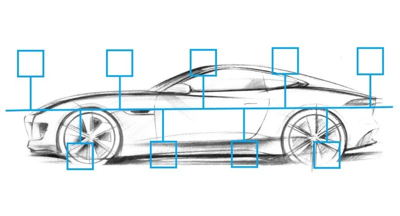

Desenvolvido pela Bosch na década de 1980, o barramento CAN (Controller Area Network) revolucionou a maneira como os dispositivos eletrônicos se comunicam, oferecendo uma solução robusta e eficiente para interconexão de componentes. Isso porque é um protocolo de comunicação serial confiável e amplamente utilizado. Sua capacidade de alta velocidade, tolerância a falhas e detecção de erros o tornaram um padrão amplamente adotado em várias indústrias. Aqui, apresentamos os detalhes desse protocolo. Confira a seguir:
Surgimento
O barramento CAN foi introduzido pela primeira vez pela Bosch como uma resposta à crescente necessidade de comunicação confiável em sistemas automotivos. Com o aumento do número de sensores, atuadores e unidades de controle presentes em um veículo, tornou-se essencial estabelecer uma forma eficiente de trocar informações entre esses dispositivos. O barramento CAN surgiu como a solução para esse desafio, permitindo uma comunicação de alta velocidade, tolerância a falhas e detecção de erros.
Funcionamento
O barramento CAN utiliza uma topologia de barramento, onde todos os dispositivos são conectados a um único cabo de comunicação. Essa abordagem reduz a quantidade de cabeamento necessária, simplificando a instalação e melhorando a escalabilidade do sistema. Os dispositivos conectados ao barramento CAN podem ser tanto sensores quanto atuadores, além de unidades de controle. O protocolo CAN define uma série de regras para a transmissão de dados. Os dados são enviados em pacotes chamados de “quadros”; e cada dispositivo no barramento CAN pode transmitir e receber esses quadros. Cada quadro possui uma identificação única, que permite que os dispositivos identifiquem a origem e o destino das mensagens. Além disso, o barramento CAN oferece suporte a diferentes níveis de prioridade, permitindo a transmissão imediata de mensagens críticas.
Benefícios
O barramento CAN oferece uma série de benefícios significativos para sistemas automotivos e industriais. Sua alta velocidade de comunicação permite a troca rápida de informações, possibilitando uma resposta em tempo real. A tolerância a falhas do barramento CAN é excepcional, graças aos mecanismos de detecção e correção de erros incorporados ao protocolo. Isso garante que a integridade dos dados seja mantida mesmo em ambientes ruidosos ou com interferências eletromagnéticas. Além disso, o barramento CAN é altamente escalável, permitindo a adição de novos dispositivos sem afetar o desempenho geral do sistema. Sua simplicidade de instalação e baixo custo de implementação também contribuem para sua ampla adoção em diversos setores.
Aplicações
O barramento CAN é amplamente utilizado em sistemas automotivos, onde desempenha um papel fundamental em áreas como controle de motor, transmissão, freios, sistemas de segurança, sistemas de entretenimento e muito mais. Além disso, o barramento CAN também encontrou aplicação em sistemas industriais, como controle de processos, automação de fábricas, sistemas de monitoramento e controle de energia, entre outros. Em sistemas automotivos, o barramento CAN permite que os diferentes componentes se comuniquem de forma eficiente, coordenando suas operações e garantindo um desempenho harmonioso do veículo. Por exemplo, os sensores podem enviar informações sobre a velocidade, temperatura, posição e outras variáveis importantes para as unidades de controle, que por sua vez podem acionar os atuadores para ajustar os sistemas de acordo. Nos sistemas industriais, o barramento CAN oferece uma solução robusta para a comunicação entre sensores, atuadores e unidades de controle distribuídas em uma fábrica ou instalação. Ele permite que os dispositivos monitorem e controlem processos de forma eficiente, facilitando a automação e a otimização da produção.
O que esperar do futuro
Embora o barramento CAN tenha sido uma inovação revolucionária, a tecnologia continua a evoluir para atender às crescentes demandas dos sistemas modernos. Variantes mais recentes, como o CAN FD (Flexible Data-Rate), permitem taxas de transferência de dados ainda mais altas, fornecendo maior capacidade para lidar com a crescente complexidade dos sistemas eletrônicos. Além disso, a adoção de tecnologias como o Ethernet para comunicação de dados em veículos e sistemas industriais tem se tornado mais comum. No entanto, o barramento CAN continua a ser amplamente utilizado devido à sua confiabilidade, custo-efetividade e maturidade como padrão de comunicação.